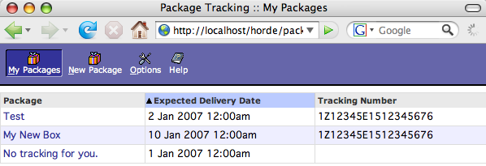
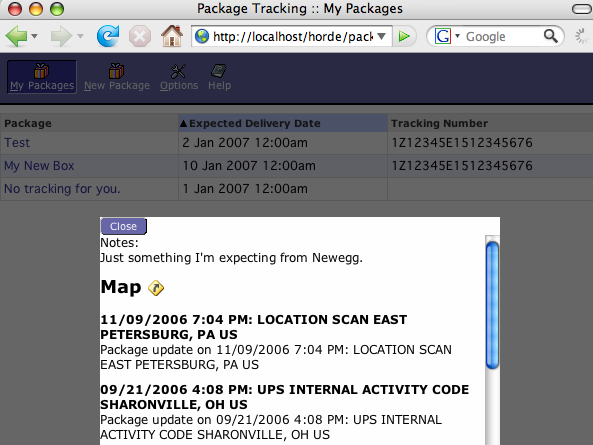
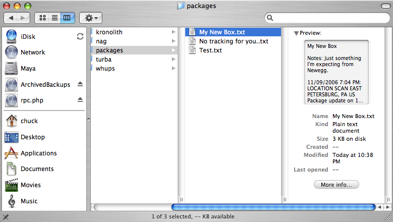
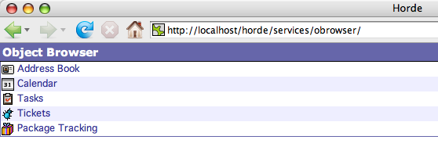
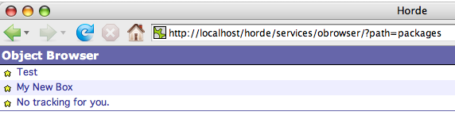

Application Building With Horde
Chuck Hagenbuch
The Horde Project
You probably know that Horde does webmail. But Horde also provides a framework for building applications. Chuck Hagenbuch will demonstrate a mix of ORM, prototype + script.aculo.us, and mapping APIs that quickly assemble into an application using Horde (call it a mashup if you must). We'll also demonstrate building standalone pages that incorporate content from an existing Horde installation.
Chuck Hagenbuch founded the Horde Project in 1998 and has been working with PHP and the world of web development ever since. He is currently an independent consultant, and has provided professional services to high-profile PHP users such as PayPal and Portugal Telecom.
Syllabus: Horde
- What?
- Why?
- How?
"What is Horde?"
- The Horde Project: an open source project driven by:
- The Horde Developers: volunteer developers providing:
- The Horde Application Framework: a PHP web application framework, consisting of:
- The Horde Libraries: PEAR-style packages powering:
- The Horde Applications: real-world integrated web applications
Why: Libraries
- Over 60 high quality PHP libraries in PEAR packages
- PHP4 and PHP5
- Authentication and Permissions to MIME handling to user preferences to XML transformations
- Coding standards that were the basis for the PEAR coding standards
- Initial PEAR packages including Log and Mail were contributed from Horde to PEAR
Why: Standards
- XHTML/CSS Layout
- Comprehensive MIME standards support
- Groupware apps all handle iCalendar and vCard
- SOAP and XML-RPC access to all application APIs
- SyncML server
- WebDAV server
Why: Backend Independence
- SQL drivers work for MySQL, PostgreSQL, Oracle, MSSQL, more
- LDAP support for contacts, preferences, users, more.
- VFS (virtual filesystem) support for local files, SQL, FTP, more
- Pluggable drivers for all backends
Why: Applications
- Over 50 in CVS
- Used by MIT, Portugal Telecom, and many many more
- Groupware apps are all in at least 2nd major release
- All applications integrate users and their data
- Developer tools including Chora and Whups
- Access to APIs without tight coupling
Why: Internationalization
- Full Unicode support in IMP and most apps
- Standards-compliant character set handling
- 39 different translations
Why: The Project
- Incredibly feature-rich
- Built through more than eight years of development ...
- ... of real-world production web applications
- Constantly updated, improved, innovated, and refactored
Building Your Own
In which the intrepid audience gets l33t
Where to start?

Horde Skeleton
Everything you need to write a standard Horde application
What if you want something like this?
Tools used
- RDO
- Horde_Form
- RDO Helpers
- Prototype
- Scriptaculous
- Google Maps
- Yahoo! Geocoding
Why, Continued
PHP 5 and the future of Horde
- RDO: lightweight, PDO-based ORM
- Automatic generation of Model classes
- Override with customized Model
- Automatic generation of Horde_Forms from Model
Introducing RDO
- ORM - Object-Relational Mapping
- Uses PDO drivers
- Full use of PHP 5 interfaces - Iterator, IteratorAggregate, ArrayAccess, Countable, etc.
RDO Example Usage
$um = new UserMapper();
$userCount = $um->count(); // Count all users.
$exists = $um->exists(1); // Check if id 1 exists.
// Look for Alice
$user = $um->find(Horde_RDO::FIND_FIRST,
array('name' => 'Alice'));
if ($user) {
echo "Found Alice: id $user->id\n";
} else {
// Create a new user.
}
RDO: Creating & Editing
$user = $um->create(array(
'name' => 'Alice',
'phone' => '212-555-6565'));
echo "Created new user with id: {$user->id}\n";
// Change the name of the user and save.
$user->name = 'Bob';
$user->save();
RDO: More Find & Delete
// List all users.
echo "Looking for all:\n";
foreach ($um->find(Horde_RDO::FIND_ALL) as $user) {
echo " (" . $user->id
. ") " . $user->name . "\n";
}
// Fetch id 2 and delete.
$user = $um->find(2);
$user->delete();
Form Generation
$vars = Variables::getDefaultVariables();
$form = new Horde_Form_Helper($mapper, $vars,
'My Form Title');
$form->renderActive(); // Edit form
$form->delete(); // process a delete action
$form->update(); // process an update form
$form->create(); // process a create form
Horde_RDO_Lens
Motivation: How many times do I have to loop through this #*)&%% array?
$data = array();
while ($row = mysql_fetch_array()) {
$data[] = $row;
}
foreach ($data as $index => $row) {
$data[$index]['foo'] = format_somehow($row['foo']);
}
foreach ($data as $row) {
echo '<p>' . display($row) . '</p>';
}
Remember Flyweight?
http://en.wikipedia.org/wiki/Flyweight_pattern
Flyweight is a software design pattern. When many objects must be manipulated and these cannot afford to have extraneous data, flyweight is appropriate.
In the flyweight pattern, the data has no pointers to the data type methods, because these would consume too much space. Instead, the subroutines are called directly. In some cases, flyweight inheritance is performed by "shift-in" and "shift-out" data markers as a higher-level operation cycles through an array of flyweight data.
One classic example of a flyweight pattern are the characters stored in a word processor. Each character represents an object that has a font face, font size, and other formatting data. As you can imagine, a large document with this data structure would bloat the memory footprint of the word processor. Moreover, since much of this data is repeated, there must be a way to reduce the footprint - the Flyweight pattern. Each of the character objects would contain a reference to a separate formatting object which contains the required properties. This greatly reduces the memory footprint by combining all of the like-formatted characters into simpler objects that reference a single formatting object.
Lens use
$items = $mapper->find(Horde_RDO::FIND_ALL);
$formattedItems = new Horde_RDO_Decorating_Iterator(
$items, new Horde_RDO_Lens());
echo '<ul>';
foreach ($formattedItems as $item) {
echo '<li>' . $item->name
. ' :' . $item->desc . '</li>';
}
echo '</ul>';
Lens Implementation
- OuterIterator implementation
- Lens interface
- Base Lens implementation
- Code
A Package Tracking Application

Package Tracking: Delivery Tracking

Package Tracking Code
Drop the config/registry.d-packages.php file into your horde/config/registry.d/ directory with any appropriate changes, and use with Horde from CVS (3.2-CVS).
Doing more with our data
Let's provide a different way to see the packages we're expecting. How about WebDAV?
WebDAV browsing made simple

Obrowser, where art thou?
Alternate ways to see what WebDAV sees:


Implementing /browse
- Single API method
- Takes a path and an optional list of property names
- Returns an array depending on the path
- Code
External use of Horde data
Setup Code
@define('AUTH_HANDLER', true);- Tell Horde not to throw someone to a login screen; you'll handle authentication.
$session_control = 'none';- Don't use sessions
require_once '/var/www/horde/lib/base.php';- Load a base Horde environment
Getting Block Content
require_once 'Horde/Block/Collection.php';
$weather = Horde_Block_Collection::getBlock(
'horde',
'weatherdotcom',
array('location' => 'Boston, MA',
'days' => 3,
'units' => 'standard'));
Showing Block Content
echo $weather->getTitle(); echo $weather->getContent();
Questions?
Resources
- The Horde website: http://www.horde.org/
- Developer Documentation: http://dev.horde.org/
- Wiki: http://wiki.horde.org/
- Prototype: http://www.prototypejs.org/
- Scriptaculous: http://script.aculo.us/
- Google Maps: http://google.com/apis/maps/
- Yahoo! APIs: http://developer.yahoo.com/maps/rest/V1/geocode.html